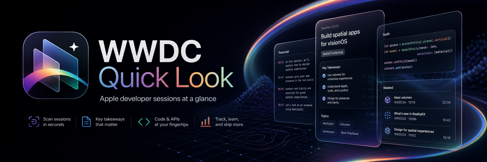

WWDC Quick Look · Landing Page
用一句命令安装，在提示词里即可查询 WWDC Session 与资源。
安装方式（skills.sh）
一键安装

提示词调用示例
安装完成后，在支持 skills 的聊天环境里直接发提示词：
页面聚焦：安装方式 + 提示词调用方式。
用一句命令安装，在提示词里即可查询 WWDC Session 与资源。

安装完成后，在支持 skills 的聊天环境里直接发提示词：
页面聚焦：安装方式 + 提示词调用方式。